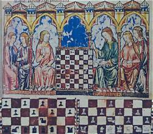

Șahul are o istorie fascinantă care se întinde pe mai mult de o mie și jumătate de ani. Evoluția sa reflectă schimbarile culturale și geografice prin care a trecut lumea de-a lungul secolelor.

Strămoșul direct al șahului modern a apărut în India în secolul al VI-lea d.Hr. și se numea Chaturanga (care înseamnă „patru divizii ale armatei”: infanterie, cavalerie, elefanți și care de luptă, reprezentate prin piesele de pe tablă). Jocul era o simulare a unei bătălii militare strategice.

Din India, jocul s-a răspândit în Imperiul Persan, unde a primit numele de Shatranj. Odată cu cucerirea persană de către arabii musulmani, jocul a pătruns în lumea islamică, unde a devenit extrem de popular. Cărturarii arabi au început să analizeze primele probleme de șah și să scrie tratate strategice despre mutări.

Șahul a ajuns în Europa prin intermediul Spaniei și Italiei în jurul secolului al X-lea. În perioada medievală, regulile jocului au început să se modifice treptat pentru a deveni mai dinamice. Cea mai importantă revoluție a avut loc la sfârșitul secolului al XV-lea, când Dama (Regina) și Nebunul au primit puteri mult mai mari de mișcare, transformând șahul în jocul rapid și agresiv pe care îl știm astăzi.

În secolul al XIX-lea, șahul a intrat în era sa modernă prin organizarea primelor turnee internaționale oficiale. Primul campionat mondial oficial de șah a avut loc în 1886, fiind câștigat de Wilhelm Steinitz. Astăzi, șahul este unfenomen global digitalizat, guvernat de FIDE (Federația Internațională de Șah).